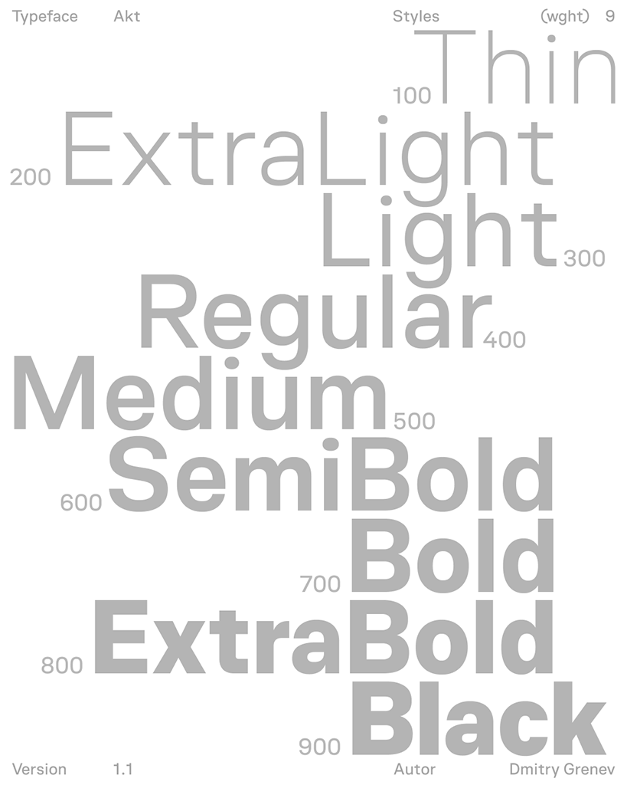

Akt is a contemporary sans-serif typeface crafted for clarity and precision in modern digital design. Built with an interface-first approach, it ensures consistent behavior across layouts, components, and viewports — a dependable foundation for UI and design systems.
Each weight is designed with intent: mid-range weights support comfortable reading, while heavier ones add focus and structure to titles and key visual elements.Balancing rational geometry with refined optical details, Akt offers the precision developers need and the flexibility designers expect — a unified typographic system for modern interfaces and branding. Designed by Dima Grenev.
The variable font axis allows fine-tuning weight to match your layout needs. The family covers basic Latin and Cyrillic scripts and includes essential punctuation and symbols. Vertical metrics are set for balanced line spacing across platforms.
Design highlights include compact counters, open apertures, and a steady rhythm that works well from small UI labels to longer paragraphs. The typographic color remains consistent through the optical weight range, making it reliable for product design, dashboards, and editorial interfaces.
To contribute, see github.com/dimgrenev/akt.
